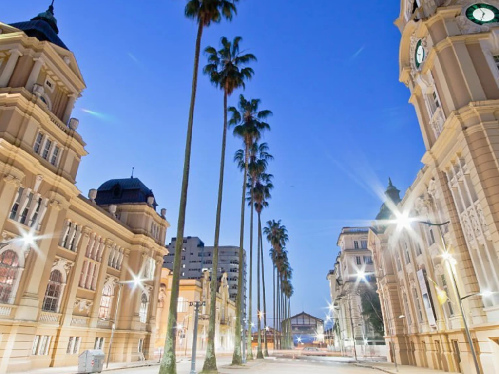

O Rio Grande do Sul é o estado mais ao sul do Brasil, conhecido por sua forte identidade cultural, marcada pelas tradições gaúchas, como o chimarrão, o churrasco e as vestimentas típicas. Faz fronteira com a Argentina e o Uruguai, o que influencia seus costumes e sua história. Sua economia é diversificada, com destaque para a agropecuária, a indústria e a produção de vinhos na região da Serra Gaúcha. Além disso, o estado possui paisagens variadas, que vão de campos e pampas a regiões montanhosas, atraindo turistas interessados em cultura, gastronomia e natureza.

Voltar